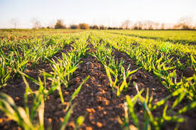
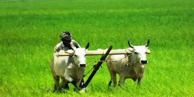
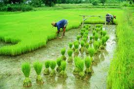
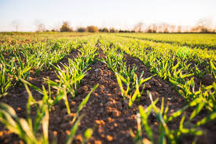
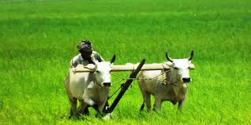
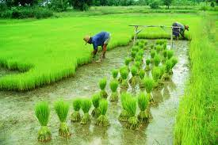

AGRICULTURE
Agriculture, with its allied sectors, is unquestionably the largest livelihood provider in India, more so in the vast rural areas.
It also contributes a significant figure to the Gross Domestic Product (GDP).
Sustainable agriculture, in terms of food security, rural employment, and environmentally sustainable technologies such as soil conservation, sustainable natural resource management and biodiversity protection,
are essential for holistic rural development.
Indian agriculture and allied activities have witnessed a green revolution, a white revolution, a yellow revolution and a blue revolution.
This section provides the information on agriculture produces; machineries, research etc. Detailed information on the government policies, schemes, agriculture loans, market prices, animal husbandry, fisheries,
horticulture, loans & credit, sericulture etc. is also available.
 




